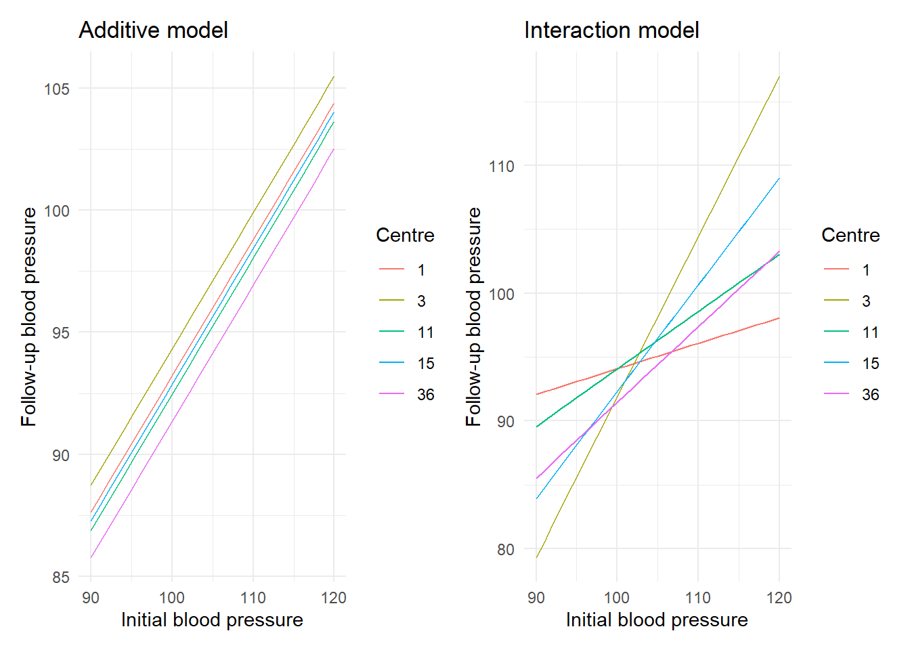
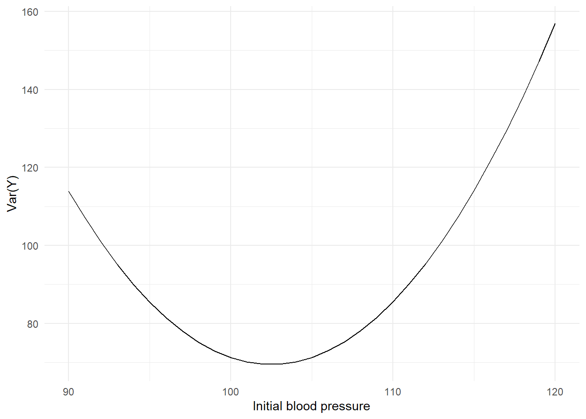
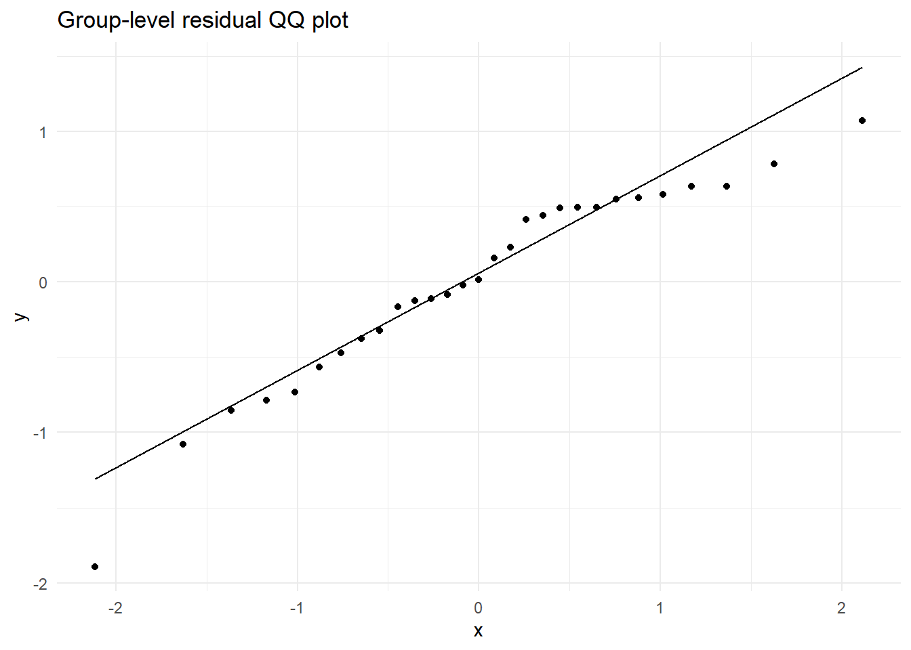
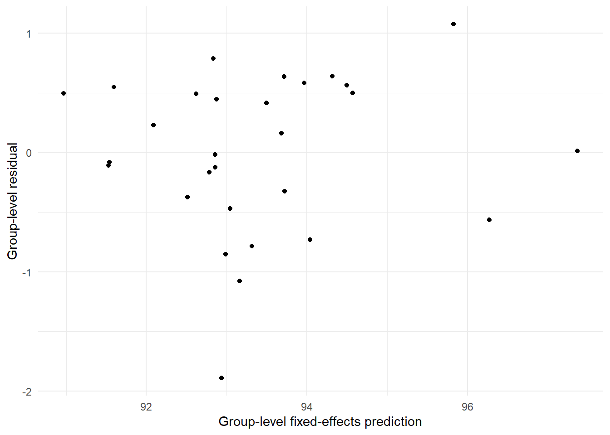
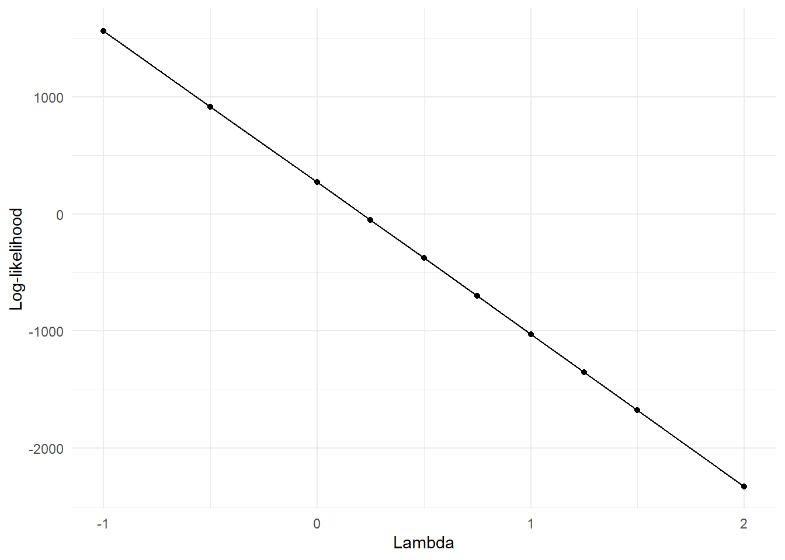

library(dplyr)
library(tidyr)
library(tibble)
library(haven)
library(forcats)
library(ggplot2)
library(patchwork)
library(lme4)
library(lmerTest)
library(broom.mixed)
library(broom)
library(emmeans)
library(nlme)
library(purrr)
library(glue)
theme_set(theme_minimal())
data_dir <- file.path("..", "mer_data_stata")
bp <- read_dta(file.path(data_dir, "bp.dta")) |>
mutate(
across(where(haven::is.labelled), haven::as_factor),
tx = factor(tx),
centre = factor(centre),
visit = as.integer(visit)
)
bp_visit3 <- bp |> filter(visit == 3)17 SME Chapter 16: Multilevel and Mixed Models
Note
This chapter reproduces and expands upon the analyses from the original Methods in Epidemiologic Research (MER) Chapter 21 (Dohoo, Martin, & Stryhn, 2012) using R with data sourced from ../mer_data_stata/bp.dta. The chapter covers multilevel and mixed-effects models - advanced methods for analyzing hierarchical data structures in epidemiology.
17.1 Replication Notes
- Data dependencies:
../mer_data_stata/bp.dta. - Required R packages:
dplyr,tidyr,tibble,haven,forcats,ggplot2,patchwork,lme4,lmerTest,broom.mixed,broom,emmeans,nlme,purrr,glue. - Setup tips: Install via
install.packages(c("dplyr","tidyr","tibble","haven","forcats","ggplot2","patchwork","lme4","lmerTest","broom.mixed","broom","emmeans","nlme","purrr","glue")). - Execution: Run the notebook in order to regenerate all mixed models, diagnostic plots, and Box–Cox profile values.
17.2 Theoretical Background
Understanding Mixed-Effects Models
Before we build mixed models, let’s understand what they are and why we need them. Mixed-effects models are powerful tools for analyzing hierarchical data structures common in epidemiological research (Dohoo, Martin, & Stryhn, 2012; Kirkwood & Sterne, 2003):
17.2.1 What are Mixed-Effects Models?
Mixed-effects models (also called multilevel or hierarchical models) are designed for data with multiple levels of grouping. Like: - Level 1: Blood pressure measurements - Level 2: Patients (multiple measurements per patient) - Level 3: Clinics (multiple patients per clinic)
The “mixed” part: They have both fixed effects (things we’re interested in, like treatment) and random effects (things we want to account for but aren’t directly interested in, like which clinic).
17.2.2 Fixed vs Random Effects
Fixed effects: Things we want to estimate and interpret. Like: - Treatment effect - Age effect - Baseline blood pressure effect
Random effects: Things we want to account for but treat as a sample from a population. Like: - Clinic effects (each clinic has its own baseline, but we’re not interested in specific clinics) - Patient effects (each patient has their own baseline)
Think of it like: Fixed effects are the “signal” we care about. Random effects are the “noise” we need to account for.
17.2.3 Why Mixed Models?
17.2.4 1. Accounting for Clustering
Mixed models account for the fact that observations within the same group are similar. This gives correct standard errors and p-values.
17.2.5 2. Modeling Hierarchical Structure
They let us model data that has natural hierarchies - like students in classes in schools. Each level can have its own effects.
17.2.6 3. Random Intercepts and Slopes
Random intercepts: Allow each group to have its own baseline level. Like each clinic having its own average blood pressure.
Random slopes: Allow each group to have its own relationship. Like each clinic having a different treatment effect.
17.2.7 Key Concepts
17.2.8 1. Variance Components
Mixed models partition variance into: - Between-group variance: How much groups differ from each other - Within-group variance: How much individuals differ within groups
17.2.9 2. Intraclass Correlation (ICC)
ICC measures what proportion of variance is between groups: - High ICC: Most variation is between groups (groups are very different) - Low ICC: Most variation is within groups (groups are similar)
17.2.10 3. Contextual Effects
Contextual effects are when group-level characteristics matter beyond individual characteristics. Like: “Does being in a clinic with generally high blood pressure affect your outcome, beyond your own blood pressure?”
17.2.11 Model Building
We build models by: 1. Starting simple (random intercepts only) 2. Adding fixed effects (predictors we care about) 3. Adding random slopes (if relationships vary by group) 4. Comparing models (using AIC, BIC, likelihood ratio tests)
17.2.12 Assumptions
Mixed models assume: - Normality: Random effects and residuals are normally distributed - Independence: Observations are independent given the random effects - Linearity: Relationships are linear (on the appropriate scale)
17.2.13 Why They’re Powerful
Mixed models let us: - Get correct answers from clustered data - Model complex hierarchical structures - Understand both individual and group effects - Make predictions at different levels
In simple terms: Mixed-effects models are for data with multiple levels (like measurements within patients within clinics). They have fixed effects (things we care about) and random effects (things we account for). They let us model complex structures and get correct answers from clustered data. They’re essential when your data has natural groupings.
17.3 Setup
What is this section doing?
This section prepares for multilevel and mixed-effects modeling - analyzing data with multiple levels of grouping. Think of it like analyzing data that has layers:
- Loading libraries: Getting tools for mixed-effects models
- Reading data: Opening blood pressure data with multiple visits per patient, patients within centers
- Data preparation: Organizing data for multilevel analysis
In simple terms: We’re preparing to analyze data that has multiple levels - like blood pressure measurements (level 1) within patients (level 2) within centers (level 3). Mixed-effects models let us account for all these levels simultaneously.
17.4 Example 21.1: Variance Components and ICC
What is this section doing?
This section calculates how much variation is between groups vs within groups. Think of it like measuring how similar people in the same group are:
- Variance components: Breaking down total variation into “between centers” and “within centers”
- ICC (Intraclass Correlation Coefficient): A number from 0 to 1 showing how much variation is between groups
- ICC close to 1: Groups are very different, people within groups are very similar
- ICC close to 0: Groups are similar, most variation is within groups
- Why it matters: High ICC means clustering is important and we must account for it
In simple terms: We’re measuring how much clustering matters. If ICC is high, people in the same center are very similar, and we definitely need to account for clustering. If ICC is low, clustering matters less.
null_model <- lmer(dbp ~ 1 + (1 | centre), data = bp_visit3, REML = TRUE)
var_components <- VarCorr(null_model)
centre_var <- attr(var_components$centre, "stddev")^2
residual_var <- attr(var_components, "sc")^2
icc_ml <- centre_var / (centre_var + residual_var)
anova_model <- aov(dbp ~ centre, data = bp_visit3)
ms_between <- summary(anova_model)[[1]]$`Mean Sq`[1]
ms_within <- summary(anova_model)[[1]]$`Mean Sq`[2]
cluster_size <- bp_visit3 |> count(centre) |> summarise(mean_n = mean(n)) |> pull(mean_n)
icc_approx <- (ms_between - ms_within) / (ms_between + (cluster_size - 1) * ms_within)
tibble(
component = c("Between-centre variance", "Residual variance", "ML ICC", "Approximate ICC"),
value = c(centre_var, residual_var, icc_ml, icc_approx)
)# A tibble: 4 × 2
component value
<chr> <dbl>
1 Between-centre variance 3.43
2 Residual variance 81.4
3 ML ICC 0.0404
4 Approximate ICC 0.034217.5 Example 21.2: Two-Level Mixed Model with Predictors
What is this section doing?
This section fits a mixed model with predictors. Think of it like building a model that accounts for both individual-level and group-level effects:
- Centering baseline: Adjusting initial blood pressure so the intercept is more meaningful
- Fitting the model: Creating a model that predicts follow-up blood pressure from treatment and baseline, while accounting for clustering by centre
- Interpreting results: Understanding how treatment and baseline affect the outcome
In simple terms: We’re building a model to predict blood pressure at follow-up, accounting for the fact that patients are grouped within centres. The model tells us how much treatment affects blood pressure, accounting for initial blood pressure.
bp_visit3 <- bp_visit3 |>
mutate(dbp1c = dbp1 - median(dbp1, na.rm = TRUE))
model_21_2 <- lmer(dbp ~ tx + dbp1c + (1 | centre), data = bp_visit3, REML = TRUE)
tidy(model_21_2, effects = "fixed", conf.int = TRUE)# A tibble: 4 × 9
effect term estimate std.error statistic df p.value conf.low conf.high
<chr> <chr> <dbl> <dbl> <dbl> <dbl> <dbl> <dbl> <dbl>
1 fixed (Interc… 94.4 0.936 101. 80.4 2.03e-86 92.5 96.3
2 fixed txNifed… -1.35 1.24 -1.08 267. 2.80e- 1 -3.79 1.10
3 fixed txAteno… -3.42 1.24 -2.77 267. 6.01e- 3 -5.86 -0.989
4 fixed dbp1c 0.558 0.107 5.21 283. 3.68e- 7 0.347 0.76917.6 Figure 21.1: Interaction Illustration
What is this section doing?
This section illustrates the difference between additive and interactive models. Think of it like comparing two ways relationships can work:
- Additive model: The effect of baseline blood pressure is the same across all centres (parallel lines)
- Interactive model: The effect of baseline blood pressure differs by centre (lines with different slopes)
In simple terms: We’re showing visually how models can differ. In an additive model, baseline blood pressure affects follow-up the same way everywhere. In an interactive model, the effect of baseline differs by centre.
coefficients_additive <- tibble(
centre = factor(c(1, 3, 15, 11, 36)),
intercept = c(37.43, 38.53, 37.07, 36.67, 35.56),
slope = 0.558
)
coefficients_interactive <- tibble(
centre = factor(c(1, 3, 15, 11, 36)),
intercept = c(74.08, -33.83, 8.59, 49.06, 32.15),
slope = c(0.200, 1.257, 0.837, 0.450, 0.593)
)
x_grid <- tibble(dbp1 = seq(90, 120, by = 1))
plot_lines <- function(coefs_df, title) {
x_grid |>
crossing(coefs_df) |>
mutate(dbp = intercept + slope * dbp1) |>
ggplot(aes(x = dbp1, y = dbp, colour = centre)) +
geom_line() +
labs(x = "Initial blood pressure", y = "Follow-up blood pressure", colour = "Centre", title = title) +
theme_minimal()
}
plot_additive <- plot_lines(coefficients_additive, "Additive model")
plot_interactive <- plot_lines(coefficients_interactive, "Interaction model")
plot_additive + plot_interactive
17.7 Example 21.4: Random Slopes for dbp1c
What is this section doing?
This section allows the effect of baseline blood pressure to vary by centre. Think of it like allowing each centre to have its own relationship:
- Random intercepts: Each centre can have a different baseline level (like different starting points)
- Random slopes: Each centre can have a different effect of baseline blood pressure (like different steepness of the line)
In simple terms: We’re allowing the relationship between initial and follow-up blood pressure to differ by centre. Some centres might show a stronger relationship than others.
model_rs_dbp1c <- lmer(dbp ~ tx + dbp1c + (dbp1c | centre), data = bp_visit3, REML = TRUE)
tidy(model_rs_dbp1c, effects = "fixed", conf.int = TRUE)# A tibble: 4 × 9
effect term estimate std.error statistic df p.value conf.low conf.high
<chr> <chr> <dbl> <dbl> <dbl> <dbl> <dbl> <dbl> <dbl>
1 fixed (Interc… 94.3 0.906 104. 73.7 9.20e-82 92.5 96.1
2 fixed txNifed… -1.32 1.21 -1.10 260. 2.74e- 1 -3.70 1.05
3 fixed txAteno… -3.57 1.21 -2.94 264. 3.55e- 3 -5.96 -1.18
4 fixed dbp1c 0.537 0.156 3.44 21.1 2.46e- 3 0.212 0.86117.8 Figure 21.2: Variance Function for Random Slopes Model
variance_params <- VarCorr(model_rs_dbp1c)$centre
sigma_intercept <- variance_params[1, 1]
sigma_slope <- variance_params[2, 2]
covariance <- variance_params[1, 2]
residual_variance <- attr(VarCorr(model_rs_dbp1c), "sc")^2
variance_grid <- tibble(
dbp1 = seq(90, 120, by = 1),
dbp1c = dbp1 - median(bp_visit3$dbp1, na.rm = TRUE)
) |>
mutate(
var_y = sigma_intercept + dbp1c^2 * sigma_slope + 2 * dbp1c * covariance + residual_variance
)
ggplot(variance_grid, aes(x = dbp1, y = var_y)) +
geom_line() +
labs(x = "Initial blood pressure", y = "Var(Y)") +
theme_minimal()
17.9 Example 21.5: Random Slopes for Treatment
What is this section doing?
This section allows the treatment effect to vary by centre. Think of it like recognizing that treatment might work better in some centres than others:
- Random treatment effects: The effect of treatment can differ by centre
- Heterogeneity: Some centres might show a strong treatment effect, others might show a weak effect
In simple terms: We’re allowing treatment to have different effects in different centres. This accounts for the possibility that treatment effectiveness varies by location or centre characteristics.
model_rs_tx <- lmer(dbp ~ tx + dbp1c + (tx | centre), data = bp_visit3, REML = TRUE)
tidy(model_rs_tx, effects = "fixed", conf.int = TRUE)# A tibble: 4 × 9
effect term estimate std.error statistic df p.value conf.low conf.high
<chr> <chr> <dbl> <dbl> <dbl> <dbl> <dbl> <dbl> <dbl>
1 fixed (Interc… 94.3 0.976 96.6 14.8 3.48e-22 92.2 96.3
2 fixed txNifed… -1.23 1.52 -0.810 18.9 4.28e- 1 -4.40 1.95
3 fixed txAteno… -3.11 1.35 -2.29 16.1 3.57e- 2 -5.98 -0.234
4 fixed dbp1c 0.553 0.107 5.19 278. 4.04e- 7 0.343 0.76317.10 Example 21.6: Contextual Effects
What is this section doing?
This section examines contextual effects - when group-level characteristics matter beyond individual characteristics. Think of it like asking “does the average blood pressure in a centre matter, beyond your own blood pressure?”:
- Individual effect: How your own baseline blood pressure affects your follow-up
- Contextual effect: How the average baseline blood pressure in your centre affects your follow-up
- Group-mean centering: Separating individual effects from group effects
In simple terms: We’re asking if being in a centre with generally high blood pressure affects your outcome, beyond your own blood pressure. This helps us understand if group characteristics matter.
bp_visit3 <- bp_visit3 |>
group_by(centre) |>
mutate(
hdbp1c = mean(dbp1c, na.rm = TRUE),
zdbp1c = dbp1c - hdbp1c
) |>
ungroup()
random_intercept_ctx <- lmer(dbp ~ tx + dbp1c + (1 | centre), data = bp_visit3, REML = TRUE)
contextual_model <- lmer(dbp ~ tx + dbp1c + hdbp1c + (1 | centre), data = bp_visit3, REML = TRUE)
group_mean_centered <- lmer(dbp ~ tx + zdbp1c + hdbp1c + (1 | centre), data = bp_visit3, REML = TRUE)
contextual_random_slope <- lmer(dbp ~ tx + dbp1c + hdbp1c + (dbp1c | centre), data = bp_visit3, REML = TRUE)
tibble(
model = c("Random intercept", "Contextual", "Group-mean centered", "Contextual + random slope"),
aic = c(AIC(random_intercept_ctx), AIC(contextual_model), AIC(group_mean_centered), AIC(contextual_random_slope)),
bic = c(BIC(random_intercept_ctx), BIC(contextual_model), BIC(group_mean_centered), BIC(contextual_random_slope))
)# A tibble: 4 × 3
model aic bic
<chr> <dbl> <dbl>
1 Random intercept 2062. 2084.
2 Contextual 2063. 2089.
3 Group-mean centered 2063. 2089.
4 Contextual + random slope 2058. 2091.17.11 Example 21.7: Inference for Fixed Effects
What is this section doing?
This section tests whether fixed effects (like treatment) are statistically significant. Think of it like asking “is the treatment effect real, or could it be due to chance?”:
- ANOVA: Tests if the model with predictors is better than a model without
- Pairwise comparisons: Compares treatment groups to see which is better
- P-values: Tells us how confident we can be that the effect is real
In simple terms: We’re testing whether treatment actually makes a difference. The p-value tells us how likely it is that we’d see this result by chance alone.
anova(model_21_2)Type III Analysis of Variance Table with Satterthwaite's method
Sum Sq Mean Sq NumDF DenDF F value Pr(>F)
tx 572.36 286.18 2 267.58 3.8747 0.02194 *
dbp1c 2003.61 2003.61 1 282.58 27.1276 3.675e-07 ***
---
Signif. codes: 0 '***' 0.001 '**' 0.01 '*' 0.05 '.' 0.1 ' ' 1emmeans(model_21_2, pairwise ~ tx, adjust = "none")$contrasts |>
tidy()# A tibble: 3 × 8
term contrast null.value estimate std.error df statistic p.value
<chr> <chr> <dbl> <dbl> <dbl> <dbl> <dbl> <dbl>
1 tx Carvedilol - Nife… 0 1.35 1.24 268. 1.08 0.280
2 tx Carvedilol - Aten… 0 3.42 1.24 268. 2.77 0.00603
3 tx Nifedipine - Aten… 0 2.08 1.26 270. 1.64 0.101 17.12 Example 21.8: Inference for Random Effects
What is this section doing?
This section compares models with and without random effects to see if clustering matters. Think of it like asking “do we need to account for clustering, or can we ignore it?”:
- One-level model: Ignores clustering (treats all observations as independent)
- Random intercept model: Accounts for clustering (allows centres to differ)
- Random slope models: Allows relationships to vary by centre
- Model comparison: Uses AIC/BIC to see which model fits best
In simple terms: We’re comparing different models to see if accounting for clustering improves our model. If AIC/BIC is lower, the model with random effects is better.
one_level <- lm(dbp ~ tx + dbp1c, data = bp_visit3)
rand_int <- model_21_2
rand_slope_dbp1c <- model_rs_dbp1c
rand_slope_tx <- model_rs_tx
# Cannot use anova() to compare lm and lmer objects directly
# Compare using AIC/BIC instead
comparison_one_vs_rand <- tibble(
model = c("One-level (lm)", "Random intercept (lmer)"),
AIC = c(AIC(one_level), AIC(rand_int)),
BIC = c(BIC(one_level), BIC(rand_int))
)
# Can use anova() for lmer model comparisons
comparison_rand_models <- anova(rand_int, rand_slope_dbp1c, rand_slope_tx)
list(
one_level_vs_random_intercept = comparison_one_vs_rand,
random_effects_comparison = comparison_rand_models
)$one_level_vs_random_intercept
# A tibble: 2 × 3
model AIC BIC
<chr> <dbl> <dbl>
1 One-level (lm) 2063. 2081.
2 Random intercept (lmer) 2062. 2084.
$random_effects_comparison
Data: bp_visit3
Models:
rand_int: dbp ~ tx + dbp1c + (1 | centre)
rand_slope_dbp1c: dbp ~ tx + dbp1c + (dbp1c | centre)
rand_slope_tx: dbp ~ tx + dbp1c + (tx | centre)
npar AIC BIC logLik -2*log(L) Chisq Df Pr(>Chisq)
rand_int 6 2064.1 2086.1 -1026.1 2052.1
rand_slope_dbp1c 8 2059.4 2088.7 -1021.7 2043.4 8.6802 2 0.01304 *
rand_slope_tx 11 2072.6 2112.9 -1025.3 2050.6 0.0000 3 1.00000
---
Signif. codes: 0 '***' 0.001 '**' 0.01 '*' 0.05 '.' 0.1 ' ' 117.13 Example 21.9: Residuals and Diagnostics
What is this section doing?
This section checks if our model assumptions are met. Think of it like checking if our model is working correctly:
- Residuals: The differences between observed and predicted values (like errors)
- QQ plots: Check if residuals follow a normal distribution (like checking if errors are random)
- Group-level diagnostics: Check if centre-level random effects are reasonable
In simple terms: We’re checking if our model is valid. If residuals look random and normally distributed, our model is probably good. If not, we might need to fix something.
bp_visit3 <- bp_visit3 |>
mutate(
resid_subject = residuals(model_21_2),
pred_fixed = predict(model_21_2, re.form = NA),
pred_mixed = predict(model_21_2)
)
ranef_centre <- ranef(model_21_2, condVar = TRUE)$centre |> rename(resid_centre = `(Intercept)`)
centre_diag <- ranef_centre |>
rownames_to_column("centre") |>
left_join(
bp_visit3 |>
group_by(centre) |>
summarise(pred_centre = mean(pred_fixed), .groups = "drop"),
by = "centre"
)
centre_diag |>
ggplot(aes(sample = resid_centre)) +
stat_qq() +
stat_qq_line() +
labs(title = "Group-level residual QQ plot")
ggplot(centre_diag, aes(x = pred_centre, y = resid_centre)) +
geom_point() +
labs(x = "Group-level fixed-effects prediction", y = "Group-level residual") +
theme_minimal()
17.14 Example 21.10: Box–Cox Profile
What is this section doing?
This section finds the best transformation for the outcome variable. Think of it like trying different ways to measure something to find the one that works best:
- Box-Cox transformation: A family of transformations (like square root, log, etc.)
- Profile likelihood: Tests many transformations to find the best one
- Lambda parameter: Controls which transformation is used (lambda=1 means no transformation, lambda=0 means log)
In simple terms: We’re trying different mathematical transformations of our outcome to see which one makes our model work best. Sometimes transforming the data (like taking the log) makes relationships clearer.
lambda_values <- c(2, 1.5, 1.25, 1, 0.75, 0.5, 0.25, 0, -0.5, -1)
profile_results <- map_dfr(lambda_values, function(lambda) {
transformed <- if (lambda == 0) {
log(bp_visit3$dbp)
} else {
(bp_visit3$dbp^lambda - 1) / lambda
}
temp_data <- bp_visit3 |> mutate(y = transformed)
model <- lmer(y ~ tx + dbp1c + (1 | centre), data = temp_data, REML = FALSE)
tibble(lambda = lambda, logLik = as.numeric(logLik(model)))
})
profile_results |>
ggplot(aes(x = lambda, y = logLik)) +
geom_point() +
geom_line() +
labs(x = "Lambda", y = "Log-likelihood") +
theme_minimal()
17.15 Section 21.5.7: Hausman Test
What is this section doing?
This section compares fixed effects and random effects models. Think of it like asking “should we treat centres as fixed (each centre gets its own parameter) or random (centres are a sample from a population)?”:
- Fixed effects: Each centre gets its own intercept (like having a separate parameter for each centre)
- Random effects: Centres are treated as a random sample (like assuming centres come from a population)
- Hausman test: Compares the two approaches to see if they give similar results
In simple terms: We’re comparing two ways to handle clustering. Fixed effects are more flexible but use more parameters. Random effects are more efficient but make stronger assumptions.
fixed_xt <- lme4::lmer(dbp ~ tx + dbp1c + (1 | centre), data = bp_visit3, REML = TRUE)
random_xt <- lmer(dbp ~ tx + dbp1c + (1 | centre), data = bp_visit3, REML = TRUE)
# Note: A direct Hausman test analogue requires panel-data utilities. Here we compare coefficients.
coeff_comparison <- tibble(
term = rownames(coef(summary(fixed_xt))),
fixed_est = coef(summary(fixed_xt))[, "Estimate"],
random_est = coef(summary(random_xt))[, "Estimate"]
)
coeff_comparison# A tibble: 4 × 3
term fixed_est random_est
<chr> <dbl> <dbl>
1 (Intercept) 94.4 94.4
2 txNifedipine -1.35 -1.35
3 txAtenolol -3.42 -3.42
4 dbp1c 0.558 0.55817.16 Section 21.5.8: Robust Standard Errors
What is this section doing?
This section calculates standard errors that are robust to violations of assumptions. Think of it like using a more conservative estimate of uncertainty:
- Robust standard errors: Standard errors that work even if some model assumptions are violated
- More conservative: Usually larger than regular standard errors, making confidence intervals wider
- Safer inference: Less likely to claim significance when there isn’t any
In simple terms: We’re calculating standard errors in a way that’s more reliable, even if our data doesn’t perfectly meet all assumptions. This makes our conclusions more trustworthy.
model_gls <- lme(
dbp ~ tx + dbp1c,
random = ~1 | centre,
data = bp_visit3,
method = "REML"
)
# Extract model summary and coefficients
model_summary <- summary(model_gls)
robust_coef <- model_summary$tTable
# For robust standard errors with nlme, we can use intervals() or extract from summary
# The summary already provides standard errors
tidy_result <- tidy(model_gls)
# Also show the summary table
list(
model_summary = tidy_result,
coefficients_table = as.data.frame(robust_coef)
)$model_summary
# A tibble: 6 × 8
effect group term estimate std.error df statistic p.value
<chr> <chr> <chr> <dbl> <dbl> <dbl> <dbl> <dbl>
1 fixed <NA> (Intercept) 94.4 0.936 255 101. 1.91e-207
2 fixed <NA> txNifedipine -1.35 1.24 255 -1.08 2.80e- 1
3 fixed <NA> txAtenolol -3.42 1.24 255 -2.77 6.03e- 3
4 fixed <NA> dbp1c 0.558 0.107 255 5.21 3.93e- 7
5 ran_pars centre sd_(Intercept) 1.49 NA NA NA NA
6 ran_pars Residual sd_Observation 8.59 NA NA NA NA
$coefficients_table
Value Std.Error DF t-value p-value
(Intercept) 94.3933863 0.9364271 255 100.801637 1.908721e-207
txNifedipine -1.3455185 1.2424476 255 -1.082958 2.798500e-01
txAtenolol -3.4235824 1.2363171 255 -2.769178 6.032581e-03
dbp1c 0.5583035 0.1071926 255 5.208415 3.928036e-0717.17 Example 21.11: Heteroscedastic Variance Models
What is this section doing?
This section allows variance to differ across groups or values. Think of it like recognizing that some groups might be more variable than others:
- Homoscedastic: Same variance everywhere (like all groups having similar spread)
- Heteroscedastic: Different variance in different groups (like one group being more variable than another)
- Variance functions: Models that allow variance to change based on predictors
In simple terms: We’re allowing the amount of variability to differ. For example, blood pressure might be more variable in some centres than others, and we want our model to account for that.
# Set control parameters for better convergence
# Increase max iterations and adjust tolerance
# Try different optimizers: "nlminb" (default) or "optim"
ctrl_nlminb <- lmeControl(
maxIter = 200,
msMaxIter = 200,
tolerance = 1e-5,
niterEM = 50,
opt = "nlminb",
msTol = 1e-6,
msVerbose = FALSE
)
ctrl_optim <- lmeControl(
maxIter = 200,
msMaxIter = 200,
tolerance = 1e-5,
niterEM = 50,
opt = "optim"
)
# Fit heteroscedastic models with error handling
# Try nlminb first, then optim if that fails
hetero_tx <- tryCatch({
lme(
dbp ~ tx + dbp1c,
random = ~1 | centre,
weights = varIdent(form = ~1 | tx),
data = bp_visit3,
method = "REML",
control = ctrl_nlminb
)
}, error = function(e) {
warning("hetero_tx model failed with nlminb: ", e$message, ". Trying optim...")
# Try with optim optimizer
tryCatch({
lme(
dbp ~ tx + dbp1c,
random = ~1 | centre,
weights = varIdent(form = ~1 | tx),
data = bp_visit3,
method = "REML",
control = ctrl_optim
)
}, error = function(e2) {
warning("hetero_tx model failed even with optim: ", e2$message)
NULL
})
})
hetero_dbp1c <- tryCatch({
lme(
dbp ~ tx + dbp1c,
random = ~1 | centre,
weights = varPower(form = ~ dbp1c),
data = bp_visit3,
method = "REML",
control = ctrl_nlminb
)
}, error = function(e) {
warning("hetero_dbp1c model failed with nlminb: ", e$message, ". Trying optim...")
# Try with optim optimizer
tryCatch({
lme(
dbp ~ tx + dbp1c,
random = ~1 | centre,
weights = varPower(form = ~ dbp1c),
data = bp_visit3,
method = "REML",
control = ctrl_optim
)
}, error = function(e2) {
warning("hetero_dbp1c model failed even with optim: ", e2$message)
NULL
})
})
# Prepare comparison table
if (!is.null(hetero_tx) && !is.null(hetero_dbp1c)) {
comparison_tibble <- tibble(
model = c("Treatment-specific variance", "Power variance in dbp1c"),
logLik = c(logLik(hetero_tx), logLik(hetero_dbp1c)),
AIC = c(AIC(hetero_tx), AIC(hetero_dbp1c))
)
} else {
comparison_tibble <- tibble(
model = c("Treatment-specific variance", "Power variance in dbp1c"),
logLik = c(if (!is.null(hetero_tx)) logLik(hetero_tx) else NA,
if (!is.null(hetero_dbp1c)) logLik(hetero_dbp1c) else NA),
AIC = c(if (!is.null(hetero_tx)) AIC(hetero_tx) else NA,
if (!is.null(hetero_dbp1c)) AIC(hetero_dbp1c) else NA)
)
}
comparison_tibble# A tibble: 2 × 3
model logLik AIC
<chr> <dbl> <dbl>
1 Treatment-specific variance -1025. 2065.
2 Power variance in dbp1c NA NA 17.18 References
Dohoo, I., Martin, W., & Stryhn, H. Methods in Epidemiologic Research. University of Prince Edward Island, 2012. Available at: https://projects.upei.ca/mer/
Kirkwood, B. R., & Sterne, J. A. C. Essential Medical Statistics, 2nd Edition. Wiley-Blackwell, 2003. Available at: https://bcs.wiley.com/he-bcs/Books?action=index&bcsId=11848&itemId=0865428719
Batra, N., et al. The Epidemiologist R Handbook. Applied Epi Incorporated, 2021. Available at: https://www.epirhandbook.com/en/
Rothman KJ, Huybrechts KF, Murray EJ. Epidemiology. 3rd ed. Oxford University Press; 2024. ISBN: 9780197751541.
Jordan RA, Celeste RK, Bernabe E, Schwendicke F. Big Data in Epidemiology: Brave New World? J Dent Res. 2024 Oct;103(11):1047-1050. doi: 10.1177/00220345241272034. Epub 2024 Oct 2. PMID: 39359106; PMCID: PMC11653310.
Mazzella, A. R4SME: R for Statistical Methods in Epidemiology. GitHub repository. Available at: https://github.com/andreamazzella/R4SME
Mazzella, A. R4ASME: R for Advanced Statistical Methods in Epidemiology. GitHub repository. Available at: https://github.com/andreamazzella/r4asme